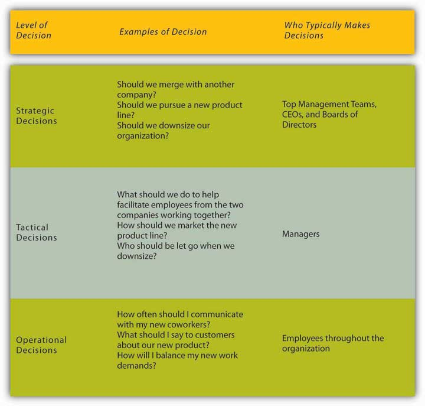
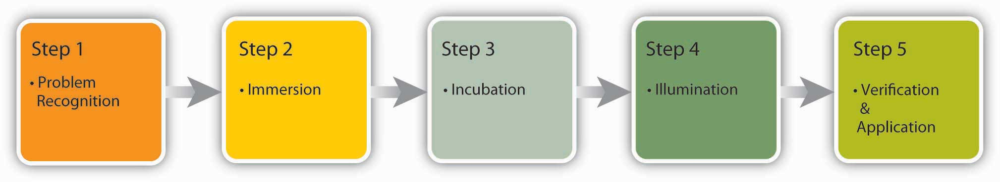

Reading this chapter will help you do the following:
Figure 11.2 The P-O-L-C Framework

While leadership is a combination of many things, your characterization of particular leaders and their leadership effectiveness is often a reflection of the decisions that they have made or not made. In this chapter, you’ll learn that while decisions are made every day within organizations, the process does not always go as well as it could. Understanding how decisions are made, how they can be biased, and how to make the decision-making process run smoothly will help you to be a more effective manager. But first, let’s define decision making.
Figure 11.3
Source: U.S. National Communications System.
You could argue that Bernard Ebbers, of the now defunct WorldCom, created a culture of poor decision making. As CEO, Ebbers avoided internal company conflict at all costs, and he ultimately avoided the reality that WorldCom, once the dominant company in the telecommunications industry, was in serious economic trouble. Notorious for his temper, employees were reluctant to present Ebbers with company information that he didn’t like. A 2002 Economist article describes Ebbers as “parochial, stubborn, preoccupied with penny-pinching.…Mr. Ebbers was a difficult man to work for.” Under Ebbers, WorldCom’s $9 billion accounting fraud grew in order to avoid facing its worsening economic reality.
WorldCom’s roots stem from a Mississippi telecom company called LDDS where Ebbers was CEO. Growing to over 80,000 employees through multiple acquisitions of other telecom businesses, WorldCom became the overwhelming industry leader. However, many of WorldCom’s executives had worked with Ebbers since his start as CEO 2 decades before. Ebbers, who was regularly seen in cowboy boots and a 10-gallon hat, led his close-knit staff in a “shoot from the hip” style. He was resistant to new technology and famously refused to use e-mail to communicate with his employees. A well-known company mantra was “That’s the way we did it at LDDS.” Ebbers lead WorldCom through over 60 acquisitions over a period of 15 years. He grew annual revenues from $1 million in 1984 to over $17 billion in 1998. However, Ebbers had little regard for long-term plans and avoided making larger strategic decisions as his company accumulated increasing debt.
As WorldCom acquired new companies, its accounting procedures, computer systems, and customer service issues became increasingly more complex, and industry experts note that WorldCom struggled to keep up with the growth. Company employees who tried to bring initial problems to Ebbers’s attention were discouraged; Ebbers made it clear he only wanted to hear good news and then based decisions on this good news. This avoidance of factoring in potential problems during decision making created a company culture that demanded success at all costs. That ultimately included falsifying financial reports. For example, former employees admitted to registering “rolling revenue” to inflate earnings, recording a single sale multiple times. Another 2002 Economist article reports that this and other dishonest techniques were “endemic in the sales hierarchy of WorldCom.…Increasing reported revenues came above all else.”
Despite efforts to inflate the books, WorldCom’s stock prices dramatically declined, and Ebbers left the company in 2002 after pressure from WorldCom’s board of directors. What came to light after his departure, however, highlighted the significant problems he avoided confronting. Under new CEO John Sidgmore, internal auditor Cynthia Cooper uncovered multiple instances of financial dishonesty and illegal activity overseen by CFO Scott Sullivan, a close confidant of Ebbers. A 2002 Wall Street Journal article reports, “As she pursued the trail of fraud, Ms. Cooper time and again was obstructed by fellow employees, some of whom disapproved of WorldCom’s accounting methods but were unwilling to contradict their bosses or thwart the company’s goals.”
Ultimately Cooper’s investigation revealed the fraud that took place under Sullivan and Ebbers. Sullivan later admitted to having booked $3.8 billion of costs as capital expenditures and that five quarters’ worth of profits should have been recorded as losses. Ebbers’s refusal to honestly face the harsh economic truth for WorldCom was ultimately highlighted to be a source of WorldCom’s financial problems. In 2005, he was found guilty of fraud, conspiracy, and filing false documentation. WorldCom was purchased for $7.6 billion and subsequently integrated into Verizon (NYSE: VE) in 2006, and Ebbers began serving a 25-year jail sentence in 2005.
Case written by [citation redacted per publisher request]. Based on information from Markham, J. W. (2006). A financial history of modern U.S. corporate scandals: From Enron to reform. New York: M. E. Sharpe Inc.; Pulliam, S., & Solomon, D. (2002, October 30). Uncooking the books. Wall Street Journal, Eastern edition. Retrieved April 4, 2010, from http://proquest.umi.com.proxy.lib.pdx.edu/pqdweb?RQT=318&mid=7510&S=1270430724&lientId=11319&Inst =PROD&Name=PQD&Type=PQD; The big lie: Inside the rise and fraud of WorldCom. (2005). CNBC. Retrieved April 4, 2010, from http://www.hulu.com/watch/46528/cnbc-originals-the-big-lie#s-p9-so-i0; When something is rotten: The best defence against “infectious greed” is a healthy corporate culture. (2002, July 25). Economist. Retrieved April 4, 2010, from http://www.economist.com; Yesterday’s man: WorldCom’s Bernie Ebbers typified the lionised chief executive. Now he is an ex-lion. (2002, May 2). Economist. Retrieved April 4, 2010, from http://www.economist.com.
Decision makingMaking choices among alternative courses of action, including inaction. refers to making choices among alternative courses of action—which may also include inaction. While it can be argued that management is decision making, half of the decisions made by managers within organizations fail.Ireland, R. D., & Miller, C. C. (2004). Decision making and firm success. Academy of Management Executive, 18, 8–12; Nutt, P. C. (2002). Why decisions fail. San Francisco: Berrett-Koehler; Nutt, P. C. (1999). Surprising but true: Half the decisions in organizations fail. Academy of Management Executive, 13, 75–90. Therefore, increasing effectiveness in decision making is an important part of maximizing your effectiveness at work. This chapter will help you understand how to make decisions alone or in a group while avoiding common decision-making traps.
Individuals throughout organizations use the information they gather to make a wide range of decisions. These decisions may affect the lives of others and change the course of an organization. For example, the decisions made by executives and consulting firms for Enron ultimately resulted in a $60 billion loss for investors, thousands of employees without jobs, and the loss of all employee retirement funds. But Sherron Watkins, a former Enron employee and now-famous whistleblower, uncovered the accounting problems and tried to enact change. Similarly, the decisions made by firms to trade in mortgage-backed securities is having negative consequences for the entire U.S. economy. Each of these people made a decision, and each person, as well as others, is now living with the consequences of his or her decisions.
Because many decisions involve an ethical component, one of the most important considerations in management is whether the decisions you are making as an employee or manager are ethical. Here are some basic questions you can ask yourself to assess the ethics of a decision.Adapted from ideas contained in Blanchard, K., & Peale, N. V. (1988). The power of ethical management. New York: William Morrow.
Despite the far-reaching nature of the decisions in the previous example, not all decisions have major consequences or even require a lot of thought. For example, before you come to class, you make simple and habitual decisions such as what to wear, what to eat, and which route to take as you go to and from home and school. You probably do not spend much time on these mundane decisions. These types of straightforward decisions are termed programmed decisions;Decisions that occur frequently enough that we develop an automated response to them. these are decisions that occur frequently enough that we develop an automated response to them. The automated response we use to make these decisions is called the decision ruleAutomated responses used to make programmed decisions.. For example, many restaurants face customer complaints as a routine part of doing business. Because this is a recurring problem for restaurants, it may be regarded as a programmed decision. To deal with this problem, the restaurant might have a policy stating that every time they receive a valid customer complaint, the customer should receive a free dessert, which represents a decision rule. Making strategic, tactical, and operational decisions is an integral part of the planning function in the P-O-L-C (planning-organizing-leading-controlling) model.
However, decisions that are unique and important require conscious thinking, information gathering, and careful consideration of alternatives. These are called nonprogrammed decisionsUnique, nonroutine, and important decisions that require conscious thinking, information gathering, and careful consideration of alternatives.. For example, in 2005, McDonald’s became aware of a need to respond to growing customer concerns regarding foods high in fat and calories. This is a nonprogrammed decision because for several decades, customers of fast-food restaurants were more concerned with the taste and price of the food, rather than the healthiness. In response, McDonald’s decided to offer healthier alternatives, such as substituting apple slices in Happy Meals for French fries and discontinuing the use of trans fats. A crisis situation also constitutes a nonprogrammed decision for companies. For example, the leadership of Nutrorim was facing a tough decision. They had recently introduced a new product, ChargeUp with Lipitrene, an improved version of their popular sports drink powder, ChargeUp. But a phone call came from a state health department to inform them that several cases of gastrointestinal distress had been reported after people consumed the new product. Nutrorim decided to recall ChargeUp with Lipitrene immediately. Two weeks later, it became clear that the gastrointestinal problems were unrelated to ChargeUp with Lipitrene. However, the damage to the brand and to the balance sheets was already done. This unfortunate decision caused Nutrorim to rethink the way decisions were made under pressure so that they now gather information to make informed choices even when time is of the essence.Garvin, D. A. (2006, January). All the wrong moves. Harvard Business Review, 18–23.
Figure 11.5
To ensure consistency around the globe such as at this St. Petersburg, Russia, location, McDonald’s trains all restaurant managers (over 65,000 so far) at Hamburger University where they take the equivalent of two years of college courses and learn how to make decisions. The curriculum is taught in 28 languages.
Decision making can also be classified into three categories based on the level at which they occur. Strategic decisions set the course of organization. Tactical decisions are decisions about how things will get done. Finally, operational decisions are decisions that employees make each day to run the organization. For example, remember the restaurant that routinely offers a free dessert when a customer complaint is received. The owner of the restaurant made a strategic decision to have great customer service. The manager of the restaurant implemented the free dessert policy as a way to handle customer complaints, which is a tactical decision. And, the servers at the restaurant are making individual decisions each day evaluating whether each customer complaint received is legitimate to warrant a free dessert.
Figure 11.6 Decisions Commonly Made within Organizations
In this chapter, we are going to discuss different decision-making models designed to understand and evaluate the effectiveness of nonprogrammed decisions. We will cover four decision-making approaches starting with the rational decision-making model, moving to the bounded rationality decision-making model, the intuitive decision-making model, and ending with the creative decision-making model.
The rational decision-making modelA decision making model which describes the series of steps that decision makers should consider if their goal is to maximize their outcome. describes a series of steps that decision makers should consider if their goal is to maximize the quality of their outcomes. In other words, if you want to make sure you make the best choice, going through the formal steps of the rational decision-making model may make sense.
Let’s imagine that your old, clunky car has broken down and you have enough money saved for a substantial down payment on a new car. It is the first major purchase of your life, and you want to make the right choice. The first step, therefore, has already been completed—we know that you want to buy a new car. Next, in step 2, you’ll need to decide which factors are important to you. How many passengers do you want to accommodate? How important is fuel economy to you? Is safety a major concern? You only have a certain amount of money saved, and you don’t want to take on too much debt, so price range is an important factor as well. If you know you want to have room for at least five adults, get at least 20 miles per gallon, drive a car with a strong safety rating, not spend more than $22,000 on the purchase, and like how it looks, you’ve identified the decision criteria. All of the potential options for purchasing your car will be evaluated against these criteria.
Before we can move too much further, you need to decide how important each factor is to your decision in step 3. If each is equally important, then there is no need to weight them, but if you know that price and gas mileage are key factors, you might weight them heavily and keep the other criteria with medium importance. Step 4 requires you to generate all alternatives about your options. Then, in step 5, you need to use this information to evaluate each alternative against the criteria you have established. You choose the best alternative (step 6) and you go out and buy your new car (step 7).
Of course, the outcome of this decision will be related to the next decision made; that is where the evaluation in step 8 comes in. For example, if you purchase a car but have nothing but problems with it, you are unlikely to consider the same make and model in purchasing another car the next time!
Figure 11.8 Steps in the Rational Decision-Making Model

While decision makers can get off track during any of these steps, research shows that limiting the search for alternatives in the fourth step can be the most challenging and lead to failure. In fact, one researcher found that no alternative generation occurred in 85% of the decisions studied.Nutt, P. C. (1994). Types of organizational decision processes. Administrative Science Quarterly, 29, 414–550. Conversely, successful managers are clear about what they want at the outset of the decision-making process, set objectives for others to respond to, carry out an unrestricted search for solutions, get key people to participate, and avoid using their power to push their perspective.Nutt, P. C. (1998). Surprising but true: Half the decisions in organizations fail. Academy of Management Executive, 13, 75–90.
The rational decision-making model has important lessons for decision makers. First, when making a decision you may want to make sure that you establish your decision criteria before you search for all alternatives. This would prevent you from liking one option too much and setting your criteria accordingly. For example, let’s say you started browsing for cars before you decided your decision criteria. You may come across a car that you think really reflects your sense of style and make an emotional bond with the car. Then, because of your love for this car, you may say to yourself that the fuel economy of the car and the innovative braking system are the most important criteria. After purchasing it, you may realize that the car is too small for all of your friends to ride in the back seat when you and your brother are sitting in front, which was something you should have thought about! Setting criteria before you search for alternatives may prevent you from making such mistakes. Another advantage of the rational model is that it urges decision makers to generate all alternatives instead of only a few. By generating a large number of alternatives that cover a wide range of possibilities, you are likely to make a more effective decision in which you do not need to sacrifice one criterion for the sake of another.
Despite all its benefits, you may have noticed that this decision-making model involves a number of unrealistic assumptions. It assumes that people understand what decision is to be made, that they know all their available choices, that they have no perceptual biases, and that they want to make optimal decisions. Nobel Prize–winning economist Herbert Simon observed that while the rational decision-making model may be a helpful tool for working through problems, it doesn’t represent how decisions are frequently made within organizations. In fact, Simon argued that it didn’t even come close!
Think about how you make important decisions in your life. Our guess is that you rarely sit down and complete all eight steps in the rational decision-making model. For example, this model proposed that we should search for all possible alternatives before making a decision, but this can be time consuming and individuals are often under time pressure to make decisions. Moreover, even if we had access to all the information, it could be challenging to compare the pros and cons of each alternative and rank them according to our preferences. Anyone who has recently purchased a new laptop computer or cell phone can attest to the challenge of sorting through the different strengths and limitations of each brand, model, and plans offered for support and arriving at the solution that best meets their needs.
In fact, the availability of too much information can lead to analysis paralysisA decision-making process where more and more time is spent on gathering information and thinking about it but no decisions actually get made., where more and more time is spent on gathering information and thinking about it, but no decisions actually get made. A senior executive at Hewlett-Packard admits that his company suffered from this spiral of analyzing things for too long to the point where data gathering led to “not making decisions, instead of us making decisions.”Zell, D. M., Glassman, A. M., & Duron, S. A. (2007). Strategic management in turbulent times: The short and glorious history of accelerated decision making at Hewlett-Packard. Organizational Dynamics, 36, 93–104. Moreover, you may not always be interested in reaching an optimal decision. For example, if you are looking to purchase a house, you may be willing and able to invest a great deal of time and energy to find your dream house, but if you are looking for an apartment to rent for the academic year, you may be willing to take the first one that meets your criteria of being clean, close to campus, and within your price range.
The bounded rationality modelA model that recognizes the limitations of decision-making processes. According to this model, individuals knowingly limit their options to a manageable set and choose the best alternative without conducting an exhaustive search for alternatives. of decision making recognizes the limitations of our decision-making processes. According to this model, individuals knowingly limit their options to a manageable set and choose the best alternative without conducting an exhaustive search for alternatives. An important part of the bounded rationality approach is the tendency to satisficeAccepting the first alternative that meets minimum criteria., which refers to accepting the first alternative that meets your minimum criteria. For example, many college graduates do not conduct a national or international search for potential job openings; instead, they focus their search on a limited geographic area and tend to accept the first offer in their chosen area, even if it may not be the ideal job situation. Satisficing is similar to rational decision making, but it differs in that rather than choosing the best choice and maximizing the potential outcome, the decision maker saves time and effort by accepting the first alternative that meets the minimum threshold.
The intuitive decision-making modelArriving at decisions without conscious reasoning. The model argues that in a given situation, experts making decisions scan the environment for cues to recognize patterns. has emerged as an important decision-making model. It refers to arriving at decisions without conscious reasoning. Eighty-nine percent of managers surveyed admitted to using intuition to make decisions at least sometimes, and 59% said they used intuition often.Burke, L. A., & Miller, M. K. (1999). Taking the mystery out of intuitive decision making. Academy of Management Executive, 13, 91–98. When we recognize that managers often need to make decisions under challenging circumstances with time pressures, constraints, a great deal of uncertainty, highly visible and high-stakes outcomes, and within changing conditions, it makes sense that they would not have the time to formally work through all the steps of the rational decision-making model. Yet when CEOs, financial analysts, and healthcare workers are asked about the critical decisions they make, seldom do they attribute success to luck. To an outside observer, it may seem like they are making guesses as to the course of action to take, but it turns out that they are systematically making decisions using a different model than was earlier suspected. Research on life-or-death decisions made by fire chiefs, pilots, and nurses finds that these experts do not choose among a list of well-thought-out alternatives. They don’t decide between two or three options and choose the best one. Instead, they consider only one option at a time. The intuitive decision-making model argues that, in a given situation, experts making decisions scan the environment for cues to recognize patterns.Breen, B. (2000, August), “What’s your intuition?” Fast Company, 290; Klein, G. (2003). Intuition at work. New York: Doubleday; Salas, E., & Klein, G. (2001). Linking expertise and naturalistic decision making. Mahwah, NJ: Lawrence Erlbaum. Once a pattern is recognized, they can play a potential course of action through to its outcome based on their prior experience. Due to training, experience, and knowledge, these decision makers have an idea of how well a given solution may work. If they run through the mental model and find that the solution will not work, they alter the solution and retest it before setting it into action. If it still is not deemed a workable solution, it is discarded as an option and a new idea is tested until a workable solution is found. Once a viable course of action is identified, the decision maker puts the solution into motion. The key point is that only one choice is considered at a time. Novices are not able to make effective decisions this way because they do not have enough prior experience to draw upon.
In addition to the rational decision making, bounded rationality models, and intuitive decision making, creative decision making is a vital part of being an effective decision maker. CreativityThe generation of new ideas. is the generation of new, imaginative ideas. With the flattening of organizations and intense competition among organizations, individuals and organizations are driven to be creative in decisions ranging from cutting costs to creating new ways of doing business. Please note that, while creativity is the first step in the innovation process, creativity and innovation are not the same thing. Innovation begins with creative ideas, but it also involves realistic planning and follow-through.
The five steps to creative decision making are similar to the previous decision-making models in some keys ways. All of the models include problem identificationThe step in which the need for problem solving becomes apparent., which is the step in which the need for problem solving becomes apparent. If you do not recognize that you have a problem, it is impossible to solve it. ImmersionThe step where the decision maker thinks about the problem consciously and gathers information. is the step in which the decision maker thinks about the problem consciously and gathers information. A key to success in creative decision making is having or acquiring expertise in the area being studied. Then, incubationThe step when the decision maker sets the problem aside and does not think about it for a while. occurs. During incubation, the individual sets the problem aside and does not think about it for a while. At this time, the brain is actually working on the problem unconsciously. Then comes illuminationThe insight moment, when the solution to the problem becomes apparent. or the insight moment, when the solution to the problem becomes apparent to the person, usually when it is least expected. This is the “eureka” moment similar to what happened to the ancient Greek inventor Archimedes, who found a solution to the problem he was working on while he was taking a bath. Finally, the verification and applicationThe stage when the decision maker consciously verifies the feasibility of the solution and implements the decision. stage happens when the decision maker consciously verifies the feasibility of the solution and implements the decision.
A NASA scientist describes his decision-making process leading to a creative outcome as follows: He had been trying to figure out a better way to de-ice planes to make the process faster and safer. After recognizing the problem, he had immersed himself in the literature to understand all the options, and he worked on the problem for months trying to figure out a solution. It was not until he was sitting outside of a McDonald’s restaurant with his grandchildren that it dawned on him. The golden arches of the “M” of the McDonald’s logo inspired his solution: he would design the de-icer as a series of M’s!Interview by author Talya Bauer at Ames Research Center, Mountain View, CA, 1990. This represented the illumination stage. After he tested and verified his creative solution, he was done with that problem except to reflect on the outcome and process.
Figure 11.9 The Creative Decision-Making Process
Researchers focus on three factors to evaluate the level of creativity in the decision-making process. FluencyThe number of ideas a person is able to generate. refers to the number of ideas a person is able to generate. FlexibilityHow different the ideas are from one another. If decision makers are able to generate several unique solutions to a problem, they are high on flexibility. refers to how different the ideas are from one another. If you are able to generate several distinct solutions to a problem, your decision-making process is high on flexibility. OriginalityHow unique a person’s ideas are. refers to an idea’s uniqueness. You might say that Reed Hastings, founder and CEO of Netflix, is a pretty creative person. His decision-making process shows at least two elements of creativity. We do not exactly know how many ideas he had over the course of his career, but his ideas are fairly different from one another. After teaching math in Africa with the Peace Corps, Hastings was accepted at Stanford University, where he earned a master’s degree in computer science. Soon after starting work at a software company, he invented a successful debugging tool, which led to his founding the computer troubleshooting company Pure Software in 1991. After a merger and the subsequent sale of the resulting company in 1997, Hastings founded Netflix, which revolutionized the DVD rental business through online rentals with no late fees. In 2007, Hastings was elected to Microsoft’s board of directors. As you can see, his ideas are high in originality and flexibility. Conlin, M. (2007, September 14). Netflix: Recruiting and retaining the best talent. Business Week Online. Retrieved March 1, 2008, from http://www.businessweek.com/managing/content/sep2007/ca20070913_564868.htm?campaign_id=rss_null.
Figure 11.10 Dimensions of Creativity

Some experts have proposed that creativity occurs as an interaction among three factors: (1) people’s personality traits (openness to experience, risk taking), (2) their attributes (expertise, imagination, motivation), and (3) the context (encouragement from others, time pressure, and physical structures).Amabile, T. M. (1988). A model of creativity and innovation in organizations. In B. M. Staw & L. L. Cummings (Eds.), Research in Organizational Behavior, 10 123–167 Greenwich, CT: JAI Press; Amabile, T. M., Conti, R., Coon, H., Lazenby, J., & Herron, M. (1996). Assessing the work environment for creativity. Academy of Management Journal, 39, 1154–1184; Ford, C. M., & Gioia, D. A. (2000). Factors influencing creativity in the domain of managerial decision making. Journal of Management, 26, 705–732; Tierney, P., Farmer, S. M., & Graen, G. B. (1999). An examination of leadership and employee creativity: The relevance of traits and relationships. Personnel Psychology, 52, 591–620; Woodman, R. W., Sawyer, J. E., & Griffin, R. W. (1993). Toward a theory of organizational creativity. Academy of Management Review, 18, 293–321. For example, research shows that individuals who are open to experience, are less conscientious, more self-accepting, and more impulsive, tend to be more creative.Feist, G. J. (1998). A meta-analysis of personality in scientific and artistic creativity. Personality and Social Psychology Review, 2, 290–309.
There are many techniques available that enhance and improve creativity. Linus Pauling, the Nobel prize winner who popularized the idea that vitamin C could help build the immunity system, said, “The best way to have a good idea is to have a lot of ideas.” One popular way to generate ideas is to use brainstorming. BrainstormingA process of generating ideas that follows a set of guidelines, which includes no criticism of ideas during the process, the idea that no suggestion is too crazy, and building on other ideas (piggybacking). is a group process of generated ideas that follows a set of guidelines that include no criticism of ideas during the brainstorming process, the idea that no suggestion is too crazy, and building on other ideas (piggybacking). Research shows that the quantity of ideas actually leads to better idea quality in the end, so setting high idea quotasA set number of ideas a group must reach before they are done with brainstorming. where the group must reach a set number of ideas before they are done, is recommended to avoid process loss and to maximize the effectiveness of brainstorming. Another unique aspect of brainstorming is that the more people are included in brainstorming, the better the decision outcome will be because the variety of backgrounds and approaches give the group more to draw from. A variation of brainstorming is wildstormingA variation of brainstorming where the group focuses on ideas that are impossible and then imagines what would need to happen to make them possible. where the group focuses on ideas that are impossible and then imagines what would need to happen to make them possible.Scott, G., Leritz, L. E., & Mumford, M. D. (2004). The effectiveness of creativity training: A quantitative review. Creativity Research Journal, 16, 361–388.
We have seen that organizational creativity is vital to organizations. Here are some guidelines for enhancing organizational creativity within teams.Adapted from ideas in Amabile, T. M. (1998). How to kill creativity. Harvard Business Review, 76, 76–87; Gundry, L. K., Kickul, J. R., & Prather, C. W. (1994). Building the creative organization. Organizational Dynamics, 22, 22–37; Keith, N., & Frese, M. (2008). Effectiveness of error management training: A meta-analysis. Journal of Applied Psychology, 93, 59–69; Pearsall, M. J., Ellis, A. P. J., & Evans, J. M. (2008). Unlocking the effects of gender faultlines on team creativity: Is activation the key? Journal of Applied Psychology, 93, 225–234; Thompson, L. (2003). Improving the creativity of organizational work groups. Academy of Management Executive, 17, 96–109.
And finally, avoiding groupthink can be an important skill to learn.Adapted and expanded from “Six recommendations for avoiding Groupthink” in Janis, I. L. (1972). Victims of groupthink. New York: Houghton Mifflin; Whyte, G. (1991). Decision failures: Why they occur and how to prevent them. Academy of Management Executive, 5, 23–31.
The four different decision-making models—rational, bounded rationality, intuitive, and creative—vary in terms of how experienced or motivated a decision maker is to make a choice. Choosing the right approach will make you more effective at work and improve your ability to carry out all the P-O-L-C functions.
Figure 11.11

Which decision-making model should I use?
Decision making is choosing among alternative courses of action, including inaction. There are different types of decisions, ranging from automatic, programmed decisions to more intensive nonprogrammed decisions. Structured decision-making processes include rational decision making, bounded rationality, intuitive, and creative decision making. Each of these can be useful, depending on the circumstances and the problem that needs to be solved.
No matter which model you use, you need to know and avoid the decision-making traps that exist. Daniel Kahnemann (another Nobel prize winner) and Amos Tversky spent decades studying how people make decisions. They found that individuals are influenced by overconfidence bias, hindsight bias, anchoring bias, framing bias, and escalation of commitment.
Overconfidence biasWhen individuals overestimate their ability to predict future events. occurs when individuals overestimate their ability to predict future events. Many people exhibit signs of overconfidence. For example, 82% of the drivers surveyed feel they are in the top 30% of safe drivers, 86% of students at the Harvard Business School say they are better looking than their peers, and doctors consistently overestimate their ability to detect problems.Tilson, W. (1999, September 20). The perils of investor overconfidence. Retrieved March 1, 2008, from http://www.fool.com/BoringPort/1999/BoringPort990920.htm. Much like a friend who is always 100% sure he can pick the winners of this week’s football games despite evidence to the contrary, these individuals are suffering from overconfidence bias. People who purchase lottery tickets as a way to make money are probably suffering from overconfidence bias. It is three times more likely for a person driving 10 miles to buy a lottery ticket to be killed in a car accident than to win the jackpot.Orkin, M. (1991). Can you win? The real odds for casino gambling, sports betting and lotteries. New York: W. H. Freeman. To avoid this bias, take the time to stop and ask yourself whether you are being realistic in your judgments.
Hindsight biasThe opposite of overconfidence bias as it occurs when a person, looking at the past, judges that a mistake that was made should have been recognized as a mistake at the time. is the opposite of overconfidence bias, as it occurs when looking backward in time where mistakes made seem obvious after they have already occurred. In other words, after a surprising event occurred, many individuals are likely to think that they already knew this was going to happen. This may be because they are selectively reconstructing the events. Hindsight bias becomes a problem especially when judging someone else’s decisions. For example, let’s say a company driver hears the engine making unusual sounds before starting her morning routine. Being familiar with this car in particular, the driver may conclude that the probability of a serious problem is small and continue to drive the car. During the day, the car malfunctions, stranding her away from the office. It would be easy to criticize her decision to continue to drive the car because, in hindsight, the noises heard in the morning would make us believe that she should have known something was wrong and she should have taken the car in for service. However, the driver may have heard similar sounds before with no consequences, so based on the information available to her at the time, she may have made a reasonable choice. Therefore, it is important for decision makers to remember this bias before passing judgments on other people’s actions.
AnchoringThe tendency for individuals to rely too heavily on a single piece of information. refers to the tendency for individuals to rely too heavily on a single piece of information. Job seekers often fall into this trap by focusing on a desired salary while ignoring other aspects of the job offer such as additional benefits, fit with the job, and working environment. Similarly, but more dramatically, lives were lost in the Great Bear Wilderness Disaster when the coroner declared all five passengers of a small plane dead within five minutes of arriving at the accident scene, which halted the search effort for potential survivors, when, in fact, the next day two survivors walked out of the forest. How could a mistake like this have been made? One theory is that decision biases played a large role in this serious error; anchoring on the fact that the plane had been consumed by flames led the coroner to call off the search for any possible survivors.Becker, W. S. (2007). Missed opportunities: The Great Bear Wilderness Disaster. Organizational Dynamics, 36, 363–376.
Framing biasThe tendency of decision makers to be influenced by the way that problems are framed. refers to the tendency of decision makers to be influenced by the way that a situation or problem is presented. For example, when making a purchase, customers find it easier to let go of a discount as opposed to accepting a surcharge, even though they both might cost the person the same amount of money. Similarly, customers tend to prefer a statement such as “85% lean beef” as opposed to “15% fat”!Li, S., Sun, Y., & Wang, Y. (2007). 50% off or buy one get one free? Frame preference as a function of consumable nature in dairy products. Journal of Social Psychology, 147, 413–421. It is important to be aware of this tendency because, depending on how a problem is presented to us, we might choose an alternative that is disadvantageous simply because of how it is framed.
Escalation of commitmentWhen individuals continue on a failing course of action after information reveals this may be a poor path to follow. occurs when individuals continue on a failing course of action after information reveals this may be a poor path to follow. It is sometimes called sunk costs fallacy because the continuation is often based on the idea that one has already invested in this course of action. For example, imagine a person purchases a used car that turns out to need another repair every few weeks. An effective way of dealing with this situation might be to sell the car without incurring further losses, donate the car, or drive it without repairing it until it falls apart. However, many people spend hours of their time and hundreds, even thousands of dollars repairing the car in the hopes that they will justify their initial investment in buying the car.
A classic example of escalation of commitment from the corporate world may be Motorola’s Iridium project. In 1980s, the phone coverage around the world was weak—it could take hours of dealing with a chain of telephone operators in several different countries to get a call through from, say, Cleveland to Calcutta. Thus, there was a real need within the business community to improve phone access around the world. Motorola envisioned solving this problem using 66 low-orbiting satellites, enabling users to place a direct call to any location around the world. At the time of idea development, the project was technologically advanced, sophisticated, and made financial sense. Motorola spun off Iridium as a separate company in 1991. It took researchers 15 years to develop the product from idea to market release. However, in the 1990s, the landscape for cell phone technology was dramatically different from the 1980s, and the widespread cell phone coverage around the world eliminated a large base of the projected customer base for Iridium. Had they been paying attention to these developments, the decision makers would probably have abandoned the project at some point in the early 1990s. Instead, they released the Iridium phone to the market in 1998. The phone cost $3,000 and it was literally the size of a brick. Moreover, it was not possible to use the phone in moving cars or inside buildings! Not surprisingly, the launch was a failure and Iridium filed for bankruptcy in 1999.Finkelstein, S., & Sanford, S. H. (2000, November). Learning from corporate mistakes: The rise and fall of Iridium. Organizational Dynamics, 29(2), 138–148. The company was ultimately purchased for $25 million by a group of investors (whereas it cost the company $5 billion to develop its product), scaled down its operations, and modified it for use by the Department of Defense to connect soldiers in remote areas not served by landlines or cell phones.
Why does escalation of commitment occur? There may be many reasons, but two are particularly important. First, decision makers may not want to admit that they were wrong. This may be because of personal pride or being afraid of the consequences of such an admission. Second, decision makers may incorrectly believe that spending more time and energy might somehow help them recover their losses. Effective decision makers avoid escalation of commitment by distinguishing between when persistence may actually pay off versus when persistence might mean escalation of commitment. To avoid escalation of commitment, you might consider having strict turning back points. For example, you might determine up front that you will not spend more than $500 trying to repair the car and will sell the car when you reach that point. You might also consider assigning separate decision makers for the initial buying and subsequent selling decisions. Periodical evaluations of an initially sound decision to see whether the decision still makes sense is also another way of preventing escalation of commitment. This becomes particularly important in projects such as the Iridium where the initial decision is not immediately implemented but instead needs to go through a lengthy development process. In such cases, it becomes important to assess the soundness of the initial decision periodically in the face of changing market conditions. Finally, creating an organizational climate where individuals do not fear admitting that their initial decision no longer makes economic sense would go a long way in preventing escalation of commitment, as it could lower the regret the decision maker may experience.Wong, K. F. E., & Kwong, J. Y. Y. (2007). The role of anticipated regret in escalation of commitment. Journal of Applied Psychology, 92, 545–554.
Figure 11.13

Motorola released the Iridium phone to the market in 1998. The phone cost $3,000 and was literally the size of a brick. This phone now resides at the Smithsonian Air and Space Museum in Dulles, Virginia.
So far we have focused on how individuals make decisions and how to avoid decision traps. Next we shift our focus to the group level. There are many similarities and many differences between individual and group decision making. There are many factors that influence group dynamics and also affect the group decision-making process. We will discuss some of them in the next section.
Understanding decision-making traps can help you avoid and manage them. Overconfidence bias can cause you to ignore obvious information. Hindsight bias can similarly cause a person to incorrectly believe in their ability to predict events. Anchoring and framing biases show the importance of the way problems or alternatives are presented in influencing one’s decision. Escalation of commitment demonstrates how individuals’ desire for consistency, or to avoid admitting a mistake, can cause them to continue to invest in a decision that is not prudent.
When it comes to decision making, are two heads better than one? The answer to this question depends on several factors. Group decision making has the advantages of drawing from the experiences and perspectives of a larger number of individuals. Hence, they have the potential to be more creative and lead to a more effective decision. In fact, groups may sometimes achieve results beyond what they could have done as individuals. Groups also make the task more enjoyable for members in question. Finally, when the decision is made by a group rather than a single individual, implementation of the decision will be easier because group members will be invested in the decision. If the group is diverse, better decisions may be made because different group members may have different ideas based on their background and experiences. Research shows that for top management teams, groups that debate issues and that are diverse make decisions that are more comprehensive and better for the bottom line in terms of profitability and sales.Simons, T., Pelled, L. H., & Smith, K. A. (1999). Making use of difference: Diversity, debate, decision comprehensiveness in top management teams. Academy of Management Journal, 42, 662–673.
Despite its popularity within organizations, group decision making suffers from a number of disadvantages. We know that groups rarely outperform their best member.Miner, F. C. (1984). Group versus individual decision making: An investigation of performance measures, decision strategies, and process losses/gains. Organizational Behavior and Human Performance, 33, 112–124. While groups have the potential to arrive at an effective decision, they often suffer from process losses. For example, groups may suffer from coordination problems. Anyone who has worked with a team of individuals on a project can attest to the difficulty of coordinating members’ work or even coordinating everyone’s presence in a team meeting. Furthermore, groups can suffer from social loafingThe tendency of individuals to put in less effort when working in a group context., or the tendency of some members to put forth less effort while working within a group. Groups may also suffer from groupthinkA group pressure phenomenon that increases the risk of the group making flawed decisions by allowing reductions in mental efficiency, reality testing, and moral judgment., the tendency to avoid critical evaluation of ideas the group favors. Finally, group decision making takes a longer time compared with individual decision making, given that all members need to discuss their thoughts regarding different alternatives.
Thus, whether an individual or a group decision is preferable will depend on the specifics of the situation. For example, if there is an emergency and a decision needs to be made quickly, individual decision making might be preferred. Individual decision making may also be appropriate if the individual in question has all the information needed to make the decision and if implementation problems are not expected. However, if one person does not have all the information and skills needed to make the decision, if implementing the decision will be difficult without the involvement of those who will be affected by the decision, and if time urgency is more modest, then decision making by a group may be more effective.
Figure 11.14 Advantages and Disadvantages of Different Levels of Decision Making

Have you ever been in a decision-making group that you felt was heading in the wrong direction, but you didn’t speak up and say so? If so, you have already been a victim of groupthink. Groupthink is a group pressure phenomenon that increases the risk of the group making flawed decisions by leading to reduced mental efficiency, reality testing, and moral judgment. Groupthink is characterized by eight symptoms that include:Janis, I. L. (1972). Victims of groupthink. New York: Houghton Mifflin.
Figure 11.15
Avoiding groupthink can be a matter of life or death. In January 1986, the space shuttle Challenger exploded 73 seconds after liftoff, killing all seven astronauts aboard. The decision to launch Challenger that day, despite problems with mechanical components of the vehicle and unfavorable weather conditions, is cited as an example of groupthink.
While research on groupthink has not confirmed all of the theory, groups do tend to suffer from symptoms of groupthink when they are large and when the group is cohesive because the members like each other.Esser, J. K. (1998). Alive and well after 25 years: A review of groupthink research. Organizational Behavior and Human Decision Processes, 73, 116–141; Mullen, B., Anthony, T., Salas, E., & Driskell, J. E. (1994). Group cohesiveness and quality of decision making: An integration of tests of the groupthink hypothesis. Small Group Research, 25, 189–204. The assumption is that the more frequently a group displays one or more of the eight symptoms, the worse the quality of their decisions will be.
However, if your group is cohesive, it is not necessarily doomed to engage in groupthink.
Nominal Group TechniqueA technique designed to help with group decision making by ensuring that all members participate fully. (NGT) was developed to help with group decision making by ensuring that all members participate fully. NGT is not a technique to be used at all meetings routinely. Rather, it is used to structure group meetings when members are grappling with problem solving or idea generation. It follows four steps.Delbecq, A. L., Van de Ven, A. H., & Gustafson, D. H. (1975). Group techniques for program planning: A guide to nominal group and Delphi processes. Glenview, IL: Scott, Foresman. First, each member of the group engages in a period of independently and silently writing down ideas. Second, the group goes in order around the room to gather all the ideas that were generated. This goes on until all the ideas are shared. Third, a discussion takes place around each idea and members ask for and give clarification and make evaluative statements. Finally, individuals vote for their favorite ideas by using either ranking or rating techniques. Following the four-step NGT helps to ensure that all members participate fully and avoids group decision-making problems such as groupthink.
Delphi TechniqueA group process that uses written responses to a series of questionnaires instead of physically bringing individuals together to make a decision. is unique because it is a group process using written responses to a series of questionnaires instead of physically bringing individuals together to make a decision. The first questionnaire asks individuals to respond to a broad question, such as stating the problem, outlining objectives, or proposing solutions. Each subsequent questionnaire is built from the information gathered in the previous one. The process ends when the group reaches a consensus. Facilitators can decide whether to keep responses anonymous. This process is often used to generate best practices from experts. For example, Purdue University professor Michael Campion used this process when he was editor of the research journal Personnel Psychology and wanted to determine the qualities that distinguished a good research article. Using the Delphi Technique, he was able to gather responses from hundreds of top researchers from around the world without ever having to leave his office and distill them into a checklist of criteria that he could use to evaluate articles submitted to the journal.Campion, M. A. (1993). Article review checklist: A criterion checklist for reviewing research articles in applied psychology. Personnel Psychology, 46, 705–718.
Majority ruleA decision-making rule where each member of the group is given a single vote and the option that receives the greatest number of votes is selected. refers to a decision-making rule where each member of the group is given a single vote, and the option that receives the greatest number of votes is selected. This technique has remained popular, perhaps because of its simplicity, speed, ease of use, and representational fairness. Research also supports majority rule as an effective decision-making technique.Hastie, R., & Kameda, T. (2005). The robust beauty of majority rules in group decisions. Psychological Review, 112, 494–508. However, those who did not vote in favor of the decision will be less likely to support it.
ConsensusA decision-making rule that groups may use when the goal is to gain support for an idea or plan of action. This decision-making rule is inclusive, participatory, cooperative, and democratic. is another decision-making rule that groups may use when the goal is to gain support for an idea or plan of action. While consensus tends to take longer in the first place, it may make sense when support is needed to enact the plan. The process works by discussing the issues, generating a proposal, calling for consensus, and discussing any concerns. If concerns still exist, the proposal is modified to accommodate them. These steps are repeated until consensus is reached. Thus, this decision-making rule is inclusive, participatory, cooperative, and democratic. Research shows that consensus can lead to better accuracy,Roch, S. G. (2007). Why convene rater teams: An investigation of the benfits of anticipated discussion, consensus, and rater motivation. Organizational Behavior and Human Decision Processes, 104, 14–29. and it helps members feel greater satisfaction with decisionsMohammed, S., & Ringseis, E. (2001). Cognitive diversity and consensus in group decision making: The role of inputs, processes, and outcomes. Organizational Behavior and Human Decision Processes, 85, 310–335. and to have greater acceptance. However, groups take longer with this approach and groups that cannot reach consensus become frustrated.Peterson, R. (1999). Can you have too much of a good thing? The limits of voice for improving satisfaction with leaders. Personality and Social Psychology, 25, 313–324.
Group decision support systemsInteractive computer-based systems that are able to combine communication and decision technologies to help groups make better decisions. (GDSS) are interactive computer-based systems that are able to combine communication and decision technologies to help groups make better decisions. Organizations know that having effective knowledge management systemsSystems for managing knowledge in organizations, supporting creation, capture, storage, and dissemination of information. to share information is important. Research shows that a GDSS can actually improve the output of group collaborative work through higher information sharing.Lam, S. S. K., & Schaubroeck, J. (2000). Improving group decisions by better pooling information: A comparative advantage of group decision support systems. Journal of Applied Psychology, 85, 565–573. Organizations know that having effective knowledge management systems to share information is important, and their spending reflects this reality. According to a 2002 article, businesses invested $2.7 billion into new systems in 2002 and projections were for this number to double every five years. As the popularity of these systems grows, they risk becoming counterproductive. Humans can only process so many ideas and information at one time. As virtual meetings grow larger, it is reasonable to assume that information overload can occur and good ideas will fall through the cracks, essentially recreating a problem that the GDSS was intended to solve that is to make sure every idea is heard. Another problem is the system possibly becoming too complicated. If the systems evolve to a point of uncomfortable complexity, it has recreated the problem of the bully pulpit and shyness. Those who understand the interface will control the narrative of the discussion, while those who are less savvy will only be along for the ride.Nunamaker, J. F., Jr., Dennis, A. R., Valacich, J. S., Vogel, D. R., George, J. F. (1991, July). Electronic meetings to support group work. Communications of the ACM, 34(7), 40–61. Lastly, many of these programs fail to take into account the factor of human psychology. These systems could make employees more reluctant to share information due to lack of control, lack of immediate feedback, the fear of “flaming” or harsher than normal criticism, and the desire to have original information hence more power.Babock, P. (2004, May). Shedding light on knowledge management. HR Magazine, pp. 47–50.
Decision treesDiagrams where answers to yes or no questions lead decision makers to address additional questions until they reach the end of the tree. are diagrams in which answers to yes or no questions lead decision makers to address additional questions until they reach the end of the tree. Decision trees are helpful in avoiding errors such as framing bias.Wright, G., & Goodwin, P. (2002). Eliminating a framing bias by using simple instructions to “think harder” and respondents with managerial experience: Comment on “breaking the frame.” Strategic Management Journal, 23, 1059–1067. Decision trees tend to be helpful in guiding the decision maker to a predetermined alternative and ensuring consistency of decision making—that is, every time certain conditions are present, the decision maker will follow one course of action as opposed to others if the decision is made using a decision tree.
Figure 11.17

Using decision trees can improve investment decisions by optimizing them for maximum payoff. A decision tree consists of three types of nodes. Decision nodes are commonly represented by squares. Chance nodes are represented by circles. End nodes are represented by triangles.
There are trade-offs between making decisions alone and within a group. Groups have greater diversity of experiences and ideas than individuals, but they also have potential process losses such as groupthink. Groupthink can be avoided by recognizing the eight symptoms discussed. Finally, there are a variety of tools and techniques available for helping to make more effective decisions in groups, including the Nominal Group Technique, Delphi Technique, majority rule, consensus, GDSS, and decision trees. Understanding the link between managing teams and making decisions is an important aspect of a manager’s leading function.
Doctors routinely perform postmortems to understand what went wrong with a patient who has died. The idea is for everyone to learn from the unfortunate outcome so that future patients will not meet a similar fate. But, what if you could avoid a horrible outcome before it happened by identifying project risks proactively—before your project derails? Research suggests that the simple exercise of imagining what could go wrong with a given decision can increase your ability to identify reasons for future successes or failures by 30%.Mitchell, D. J., Russo, J., & Pennington, N. (1989). Back to the future: Temporal perspective in the explanation of events. Journal of Behaviorial Decision Making, 2, 25–38. A “premortem” is a way to imagine and to avoid what might go wrong before spending a cent or having to change course along the way.Breen, B. (2000, August). What’s your intuition? Fast Company, 290; Klein, G. (September 2007). Performing a project premortem. Harvard Business Review, 18–19; Klein, G. (2003). The power of intuition: How to use your gut feelings to make better decisions at work. New York: Random House; Pliske, R., McCloskey, M., & Klein, G. (2001). Decision skills training: Facilitating learning from experience. In E. Salas & G. Klein (Eds.), Linking expertise and naturalistic decision making 37–53. Mahwah, NJ: Lawrence Erlbaum.
Gary Klein, an expert on decision making in fast-paced, uncertain, complex, and critical environments, recommends that decision makers follow this six-step premortem process to increase their chances of success.
The premortem technique allows groups to truly delve into “what if” scenarios. For example, in a premortem session at a Fortune 50 company, an executive imagined that a potential billion-dollar environmental sustainability project might fail because the CEO had retired.
There are a number of ways to learn about decision making that can help make you more effective. If the decision is important, conduct a premortem to anticipate what might go wrong. When a decision is going to involve others, be proactive in getting them to buy in before the decision is made. Individuals and groups can suffer from decision-making traps and process losses. Understanding that you can spot and avoid these traps is important in helping to make you a more effective manager.


{kind=link}
{kind=link}
{kind=link}
{kind=link}